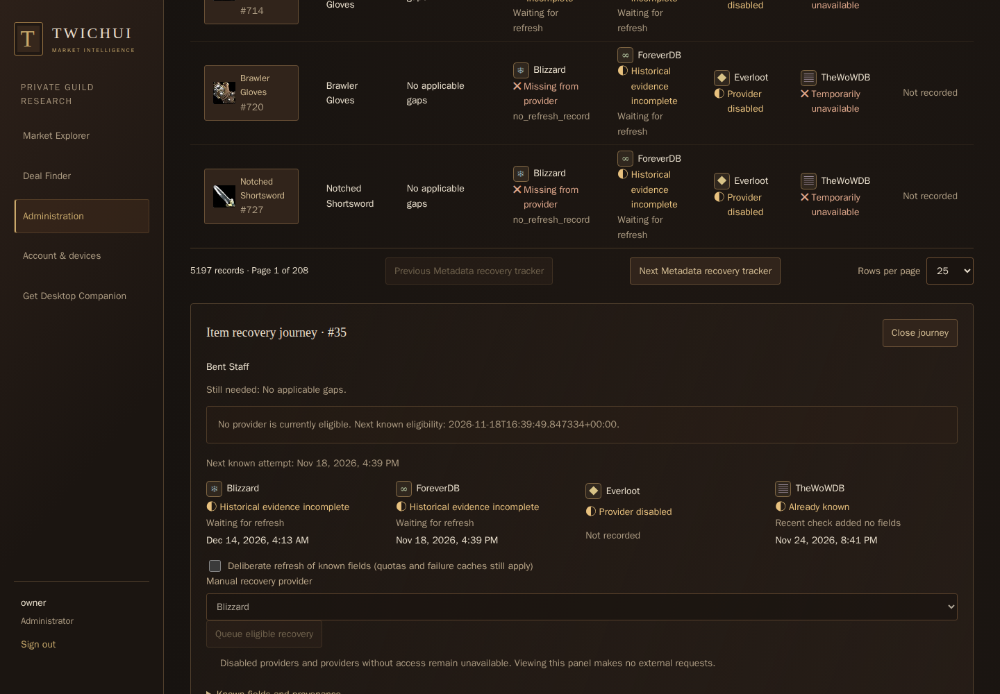
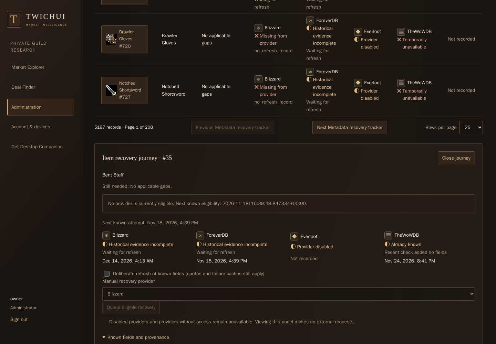
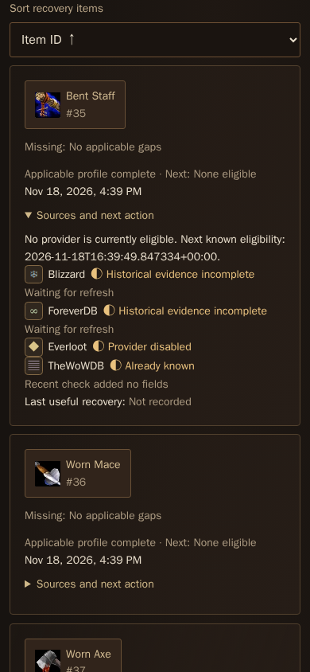
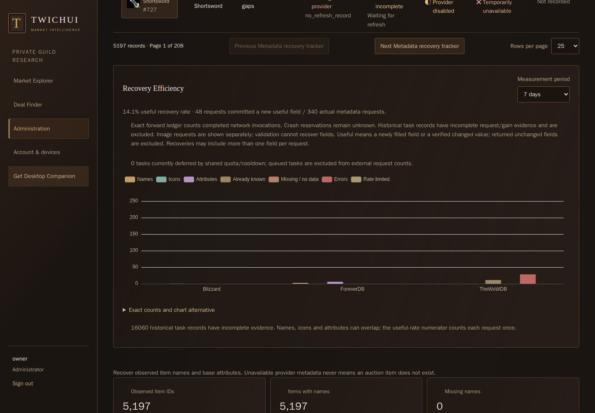
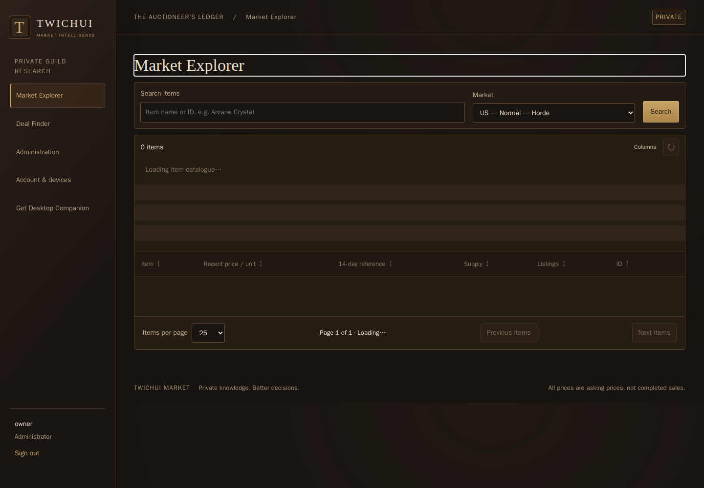
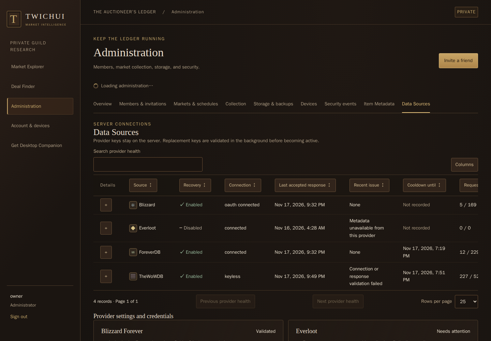
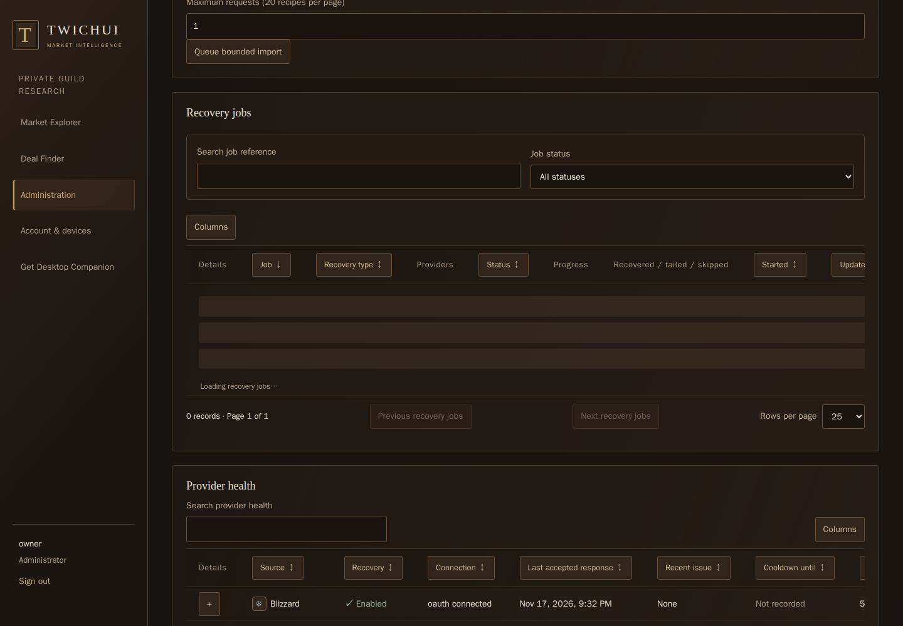
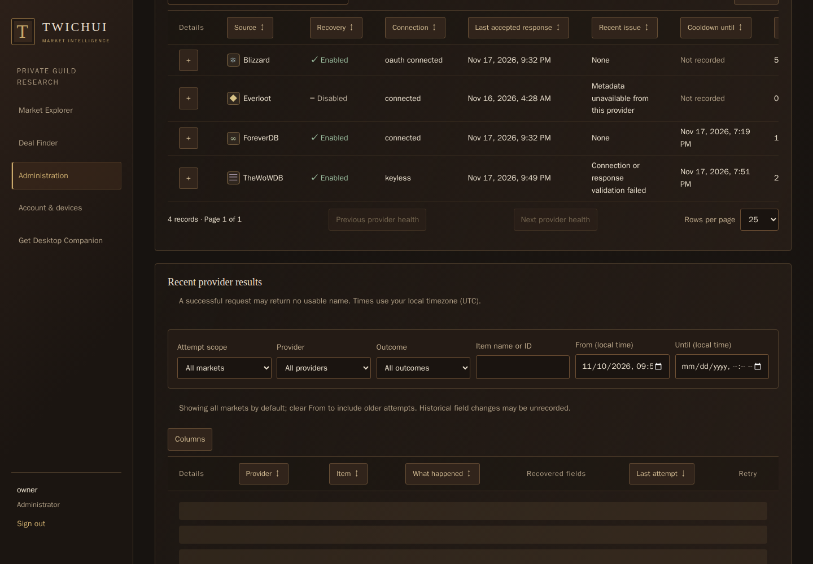
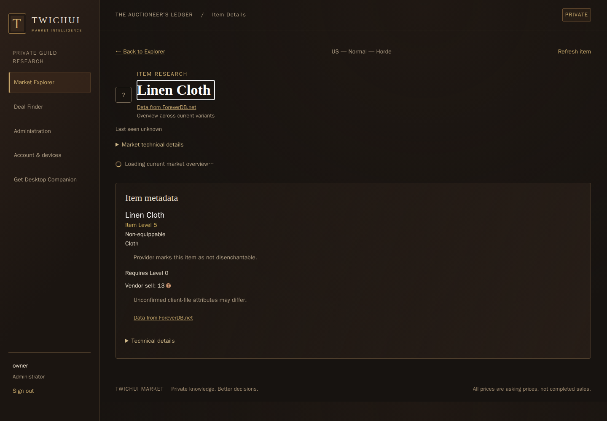

Actual authenticated HTTPS rendering of https://market.twich.gg, captured 2026-11-17T21:51:16.805Z. Frontend 5231af2, API 6682b82. Auction and provider records are genuine production observations. No fixture data or manual provider campaign was used. Counts can change between scenes as normal collection and recovery continue.
Checksums and release identities · Separate synthetic state/interaction gallery








